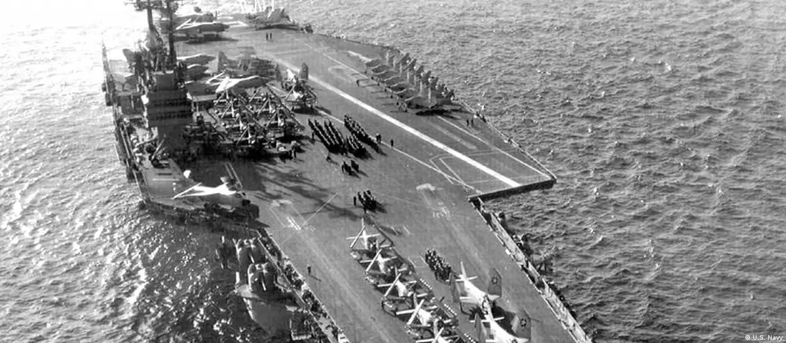

Após a revolução cubana, os EUA começaram a ajudar em vários golpes de estado na América do Sul. E um deles foi o golpe civil-militar de 1964, com a ajuda da marinha e das forças aéreas dos EUA. João Goulart , popularmente conhecido como Jango, já era prejudicado por vários grupos de direita/extrema direita no Brasil, mas após propor as reformas de base, a burguesia fez de tudo para tira-lo do poder, o que realmente aconteceu.
Nos anos 60, os EUA tinham o objetivo de “conter o comunismo”, por causa da Guerra Fria. Por este motivo, foi criado uma academia de tortura no Panamá para treinar militares brasileiros. Por esta atitude dos Estados Unidos, vários golpes de estado aconteceram na América do Sul.
